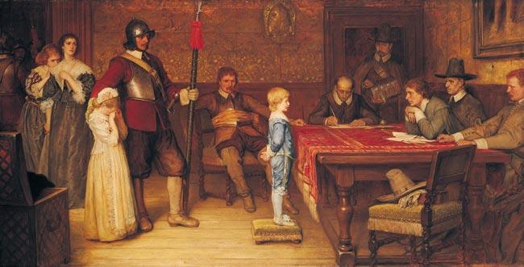

Wednesday, June the 14th, 2006
back to: title, date or indexes
hear this

Hooting Yard on the Air, April the 21st, 2011 : “Anniversary” (starts around 18:49)
Download: https://archive.org/download/hy0_hooting_yard_2011-04-21/hooting_yard_2011-04-21.mp3